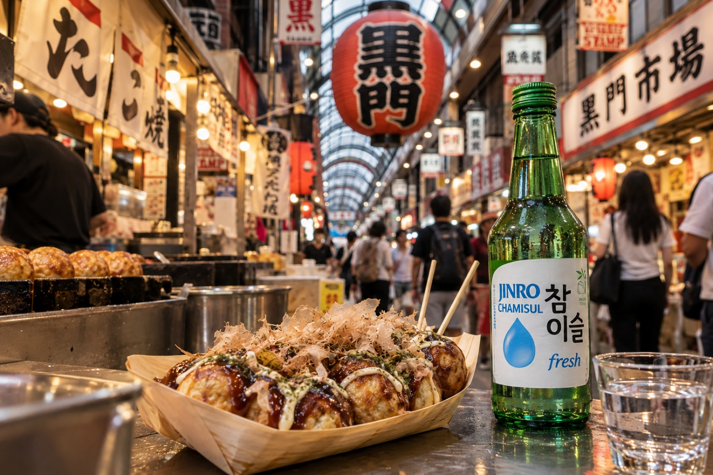
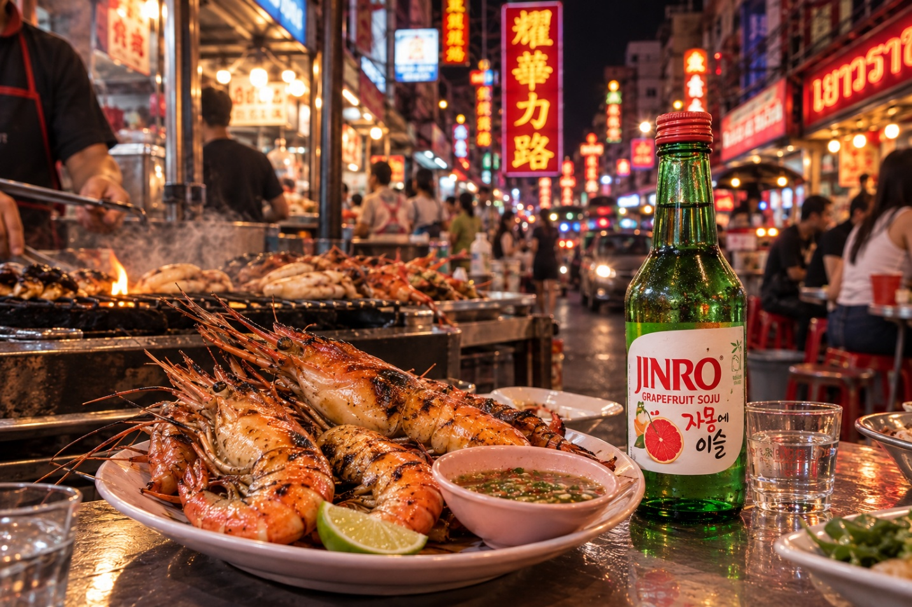
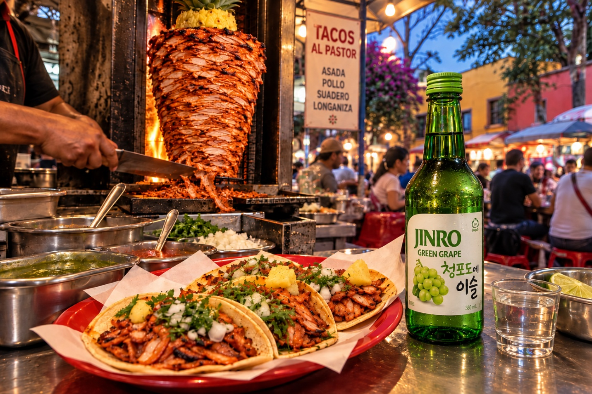

與 JINRO 一起 Snackpacking：忘掉觀光景點，跟著美食走
上一趟旅行吃到最好吃的東西，大概不在行程表上吧。大阪黑門市場的章魚燒、曼谷耀華力路的串燒攤、墨西哥城科約阿坎市場旁的塔可小吃攤。我們整理了三座城市必吃的美食路線，並為每一條路線搭配最對味的 JINRO 口味。
最近你都怎麼規劃旅行？
以前大家問的是「要去哪裡？」，但對許多 Z 世代旅人來說，第一個問題變成了「要吃什麼？」。在動態上看到一盤美食就先存起來，再以那家店為中心排出整條路線。追著小吃和街頭美食去旅行？這就叫做 Snackpacking。
規則只有一條。跟著當地人排隊就對了。排隊人潮比任何旅遊指南都準，熱油的香氣比任何地標都好認。
所以我們幫你做好了功課。大阪、曼谷、墨西哥城。每座城市必逛的市場與街頭美食路線，再加上一瓶和當地小吃絕配的 JINRO。
🇯🇵 大阪 — 黑門市場，「天下廚房」的冰箱

大阪幾百年來一直被稱為「天下的廚房」。如果要選出它最忙碌的冰箱？毫無疑問，就是黑門市場。
走進拱廊商店街，兩側都冒著煙。炭烤扇貝、當場現切的鮪魚生魚片、用噴槍炙燒的和牛串。還有來大阪絕對不能錯過的那一味：章魚燒。外皮酥脆，內餡幾乎像熔化的奶油。看著醬汁、美乃滋和柴魚片在熱氣中跳舞，就算知道會燙到上顎，你還是會馬上咬下去。
Snackpacker 小撇步 — 黑門市場很多店家傍晚前就打烊了。內行人的玩法：早上到中午之間空著肚子來，一攤接一攤，每攤吃一點。
絕配 → JINRO fresh
甜鹹醬汁、濃郁美乃滋、多汁的扇貝。這樣的組合需要一款乾淨清爽的酒，那就是 JINRO fresh。它不會蓋過食物的味道，只會幫你重置味蕾，讓你準備好迎接下一攤。
🇹🇭 曼谷 — 耀華力路，日落後才甦醒的夜市

白天的耀華力路，是金飾店和中藥行林立的唐人街。但太陽一下山、霓虹燈一亮，整條街就變成一座超大型夜市。
為什麼這麼有名？很簡單。耀華力路聚集了許多獲得米其林指南推薦的攤販與餐廳。
今晚的主角：海鮮。炭火上滋滋作響的海鮮串，還有烤大頭蝦（goong pao）——跟手掌一樣大的整隻河蝦。蝦頭裡橘色的蝦膏千萬別錯過。沾上酸辣的泰式海鮮醬，一口就是曼谷。
Snackpacker 小撇步 — 耀華力路到了傍晚才真正熱鬧起來。看到大排長龍？排就對了。排隊人潮就是最好的評價。
絕配 → JINRO Grapefruit
煙燻炭烤的海鮮，再加上又辣又酸的醬汁？你需要清爽的東西。JINRO Grapefruit 的柑橘香氣就像擠上一顆萊姆，化解辛辣，在悶熱的夜晚幫你降溫。
🇲🇽 墨西哥城 — 科約阿坎，逛完市場來份塔可

在墨西哥城，塔可不只是「一餐」——根本就是日常。早餐、午餐、半夜，什麼時候都行。
科約阿坎是一個充滿粉彩建築和石板路的迷人街區。四處散散步，順道逛逛科約阿坎市場（Mercado de Coyoacán），再到市場旁的塔可攤找個位子，單手捲起塔可。這就是在地人的路線。
第一次來？先點牧羊人塔可（Tacos al Pastor）準沒錯。醃好的豬肉像沙威瑪一樣從直立烤肉架上削成薄片，再從頂端削下一片鳳梨，直接彈到你的餅皮上。這就是精華。加上洋蔥、香菜、擠點萊姆，莎莎醬想加多少就加多少。只吃一個？比想像中難多了。
Snackpacker 小撇步 — 塔可份量小，每家只點兩三個，然後就換下一家。這就是 Snackpacking 入門課。
絕配 → JINRO Green Grape
香甜鳳梨、清新萊姆、辛辣莎莎醬。已經充滿果香的塔可，和 JINRO Green Grape 自然銜接。它清新的甜味能緩和辣度，讓你忍不住想再來一個。
你的下一條路線在哪裡？
說到底，旅行的回憶都濃縮在一口滋味裡。地標照片你會忘記，但排隊等來的那一口味道？會一直記得。
挑一座你最想念的城市，讓美食來規劃路線。下一趟旅行，先別急著排行程，打開你收藏的美食照片吧。也別忘了帶上一瓶和那座城市風味最搭的 JINRO。
想看更多全球美食與燒酒搭配，歡迎追蹤 JINRO Global 官方頻道。
免責聲明：本內容僅供已達法定飲酒年齡的讀者閱讀。JINRO 分享燒酒在世界各地文化與慶典中的意義，並支持健康、負責任的飲酒文化。請適量飲酒，酒後不開車。市場與攤販資訊以撰文時為準，可能有所變動，且並非每家店都有販售 JINRO。文中的搭配僅為我們的推薦。